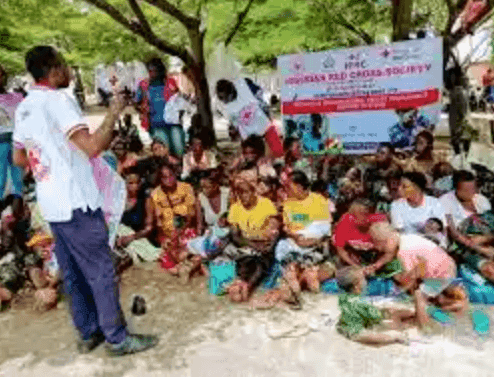

We dey promote first aid, disaster preparedness an community strength
Red Cross na big humanitarian organization wey dey run awareness campaigns for Yola to teach people how to handle emergencies. Dem dey teach basic first aid an how to prepare for disasters. Dem dey build community wey fit help quick during crisis an support people wey need help.